Die Hofregeln
Irgendwo nördlich der Alpen in einem gottverlassenen Hinterhof, wo das Gesetz nichts zu melden hat, entbrennt wieder einmal der legendäre Kampf um die sagenumwobenen Bronko-Orden. Bei Gestank von billigem Bier, Angstschweiß und Desinfektionsmittel treffen sich wieder die skrupellosesten Anführer und die berüchtigtsten Gängs des Landes. Ihr einziges Ziel: In diesem Drecksloch lange genug überleben, um sich am Ende der brutalen Schlägereien mit einem der begehrten Bronko-Orden zum König des Hofes zu krönen.
1 Das Spielmaterial
Bronko-Donko verwendet zwei komplett getrennte Kartentypen. Sie unterscheiden sich grundlegend durch ihre Rückseite:
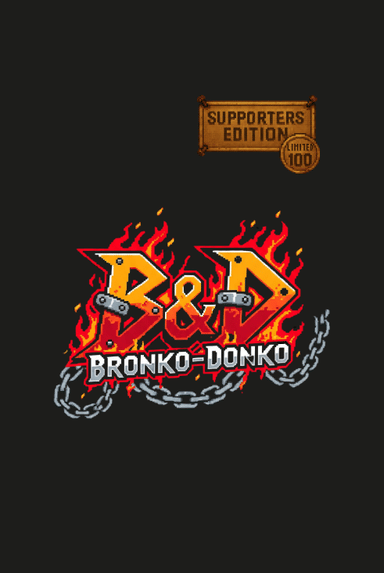
Die Kämpfer (34 Karten): Haben das B&D-Logo auf der Rückseite. Das sind deine Handkarten, die du während der Schlägerei ausspielst.
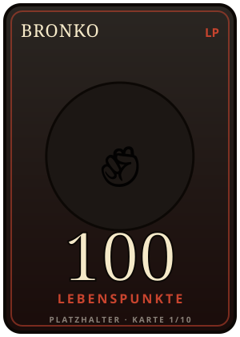
Dein Bronko (10 LP-Karten): Dein eigener Bronko ist deine Lebensanzeige. Er liegt von Anfang an als offener 10-Karten-Stapel vor dir — 100 LP ganz oben, 10 LP ganz unten, jede Karte zählt 10 LP (zusammen 100 LP). Je weiter unten die Karte, desto kaputter geprügelt zeigt sie deinen Bronko. Auf der Rückseite tragen alle Karten die Faust. Kassierst du Schaden, blutet dein Bronko und du wirfst die oberste(n) Karte(n) ab.
Die Merkmale einer Kämpferkarte
Jede Kämpferkarte verfügt über wichtige Informationen, die du für den Kampf kennen musst:
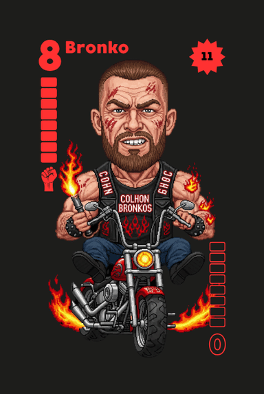
- 1Die Stärke & Gäng (Zahl oben links): Der Wert im normalen Kampf (0 bis 8). Wichtig, wenn du die Karten auf der Hand hältst: Diese reguläre Stärke ist immer vollflächig farbig ausgefüllt. Jede Stärke bildet eine eigene Gäng (z. B. sind alle 4er-Karten die „Vertriebler“, alle 8er-Karten die „Bronko“). Von jeder Gäng gibt es exakt 4 Karten im Spiel.
- 2Die Farbe: Es gibt 4 Farben (Rot, Gelb, Grün, Blau) für die Standardkarten sowie Weiß für die beiden Spezialkarten. Von jeder Gäng (Stärke 1 bis 8) gibt es genau eine Karte pro Farbe. Farbe und Stärke sind entscheidend, um bestimmte Formationen zu bilden.
- 3Der Schaden (oben rechts): Abgebildet in einem gezackten Symbol in der jeweiligen Kartenfarbe. Die Zahl zeigt an, wie viele Lebenspunkte dich diese Karte am Ende der Runde kostet. Karten ohne dieses Symbol richten keinen Schaden an.
- 4Die Revolutionsstärke (Zahl unten rechts): Diese Zahl steht auf dem Kopf und ist nur als feine Kontur gezeichnet. Sie wird erst wichtig, wenn im Hof eine Revolution ausbricht und du deine Handkarten umdrehen musst.
2 Spielvorbereitung
Bevor die erste Faust fliegt, wird der Hinterhof für das Match bereitgemacht:
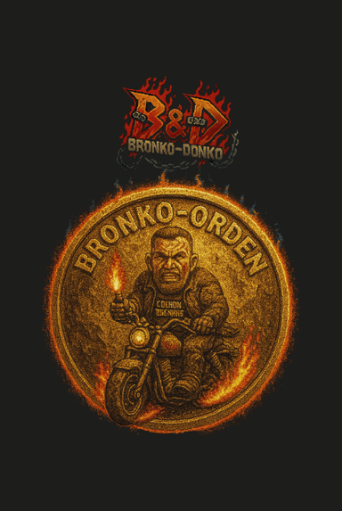
Den Hof aufräumen: Legt die Donko-Haufen-Karte, die Bronko-Blut-Karte und die 3 Fluchtkarten in die Tischmitte. Legt auch die 5 Bronko-Orden-Karten als Vorrat bereit (sie dienen dazu, auch längere Turniere wie z. B. ein „Best-of-5“ spielen zu können, um den wahren König zu ermitteln).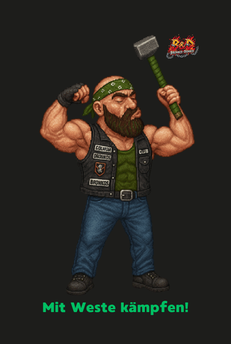
Die Weste bereitlegen: Legt die beidseitig bedruckte Weste-Karte mit der Seite „mit Weste kämpfen“ nach oben gut sichtbar für alle aus.- Deinen Bronko aufstellen: Jeder der beiden Spieler nimmt sich seinen Bronko-LP-Stapel aus 10 Karten und legt ihn offen vor sich ab — 100 LP ganz oben, 10 LP ganz unten. Jede Karte zählt 10 LP, macht zusammen eine Start-Gesundheit von 100 Lebenspunkten.
- Kämpfer anheuern: Mischt die 34 Kämpferkarten (B&D-Logo). Jeder der beiden Spieler erhält 10 Karten verdeckt auf die Hand. Alle restlichen Kämpferkarten sind für diese Schlägerei aus dem Spiel.
3 Der Spielablauf
Ein gesamtes Match besteht aus mehreren Schlägereien (vollständige Runden vom Austeilen bis zur Abrechnung). Das Ziel jeder Schlägerei ist es, als erster Spieler alle eigenen Handkarten loszuwerden. Eine Schlägerei unterteilt sich in viele kleine Schlagabtausche (Stiche auf dem Tisch). Wer einen Schlagabtausch eröffnet, hat das Kommando auf dem Hof und bestimmt die Regeln für diesen Moment.
Das erste Kommando (Schlägerei ohne Donko)
Befindet sich die Donko-Haufen-Karte in der allerersten Runde des Matches (oder nach einer erfolgreichen Flucht) in der Tischmitte, ist der Hof herrenlos. In dieser Schlägerei ohne Donko gilt:
- Der Spieler, der den Kämpfer mit dem kleinsten Stärkewert auf der Hand hält, übernimmt das erste Kommando.
- Die farbneutralen Spezialkarten (Dr. nar Kose und Dünenwolf) zählen dabei nicht. Die absolut schwächste Startkarte ist die Stärke 1 (Donko).
- Bei Gleichstand entscheidet die Farbhierarchie des Hofes: Blau (am schwächsten) < Grün < Gelb < Rot (am stärksten).
- Dieser Kämpfer muss zwingend in der allerersten Formation ausgespielt werden.
Die Formationen
Wer das Kommando hat, eröffnet den Schlagabtausch mit einer von drei Formationen und legt damit den Typ und die exakte Kartenanzahl fest:
Eine einzelne Kämpferkarte.
Mehrere Kämpfer mit exakt derselben Stärke (hier ein 3er-Mob der Stärke 5). Der Dünenwolf kann als Joker ? mitmischen.
Mindestens drei Karten derselben Farbe in ununterbrochener, aufsteigender Reihe. Der Dünenwolf springt als Joker ? ein.
Die Kampf-Aktionen
Der Gegner hat nun genau drei Optionen.
Typ und Kartenanzahl der Formation müssen exakt bedient werden.
Du spielst eine stärkere Formation desselben Typs und derselben Kartenanzahl aus. Deine Karten liegen nun obenauf und setzen den neuen Maßstab.
Du spielst eine Formation mit dem exakt identischen Stärkewert der aktuell liegenden Formation aus. Das beendet den Schlagabtausch sofort! Alle liegenden Karten werden beiseitegelegt. Du übernehmst das Kommando und eröffnest den nächsten Schlagabtausch.
Du passt und bist für den aktuellen Schlagabtausch komplett raus.
Unschlagbare Formationen
Die -Faust kennzeichnet die jeweils stärkste Karte des Hofes: Im normalen Spiel trägt sie der Bronko (Stärke 8), in einer Revolution der Donko (Revolutionsstärke 7, da dort alle Karten umgedreht sind). Jede Formation, die die Faust-Karte enthält, ist unschlagbar — sie kann weder geschlagen noch weggeboxt werden. Wer sie ausspielt, beendet den aktuellen Schlagabtausch sofort und behält das Kommando.
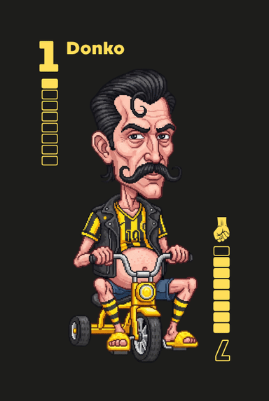
In der Revolution: Dasselbe gilt für jede Formation mit dem Donko (dann Revolutionsstärke 7 ). Einzige Ausnahme: Einen einzeln gespielten Donko (Solo) schlägt Dr. nar Kose mit seiner Revolutionsstärke 8 trotzdem.
Ein Schlagabtausch endet ansonsten, wenn eine Formation weggeboxt wurde oder der Gegner sich weggeduckt hat. Wer zuletzt Karten gelegt hat, übernimmt das Kommando für den nächsten Schlagabtausch.
4 Das Rundenende & Die Abrechnung
Sobald ein Spieler seine letzte Handkarte ablegt, endet die Schlägerei augenblicklich. Der Gewinner erhält die Bronko-Blut-Karte und wird für diese Runde zum Boss. Nun folgt die Abrechnung für den Verlierer:
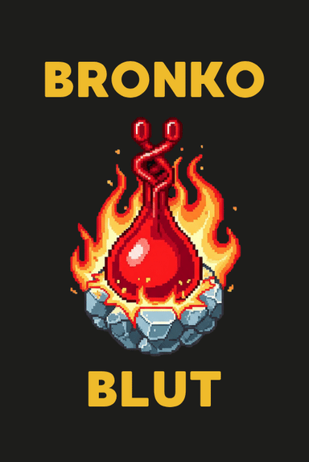
1. Schadensberechnung
Der Verlierer addiert die Schadenswerte seiner verbliebenen Handkarten. Karten ohne Schadenswert richten keinen Schaden an.
2. Schaden aufrunden – der Bronko blutet
Der erlittene Schaden wird immer auf die nächste volle 10 aufgerundet. Für je 10 LP wirft der Verlierer die oberste Karte seines Bronko-LP-Stapels ab — sein Bronko blutet und verliert Lebenspunkte. Die neue oberste Karte zeigt seine verbleibenden LP.
0 Schaden: Wer keine Karten mit Schadenswert mehr auf der Hand hält, verliert keine Karte. Ist dieser Spieler der Donko, darf er dafür eine Fluchtkarte ablegen.
Liegt durch die Weste eine LP-Karte in der Mitte, greift zuerst die eiserne Regel der Tischmitte.
Spielende & Turniersieg
Wirft ein Spieler seine letzte LP-Karte ab, ist sein Bronko umgenockt (0 LP) und das Spiel endet sofort. Der andere Spieler gewinnt und erhält eine Bronko-Orden-Karte. Wer das Turnier (z. B. „Best-of-5“) für sich entscheiden will, sammelt über mehrere Spiele die meisten Orden.
5 Das Donko-Leben
Nachdem in der Abrechnung der Staub verflogen und der Schaden verteilt ist, wird bestimmt, wer der absolute Verlierer des Hofes ist. Die Donko-Haufen-Karte markiert diesen Unglücksraben.
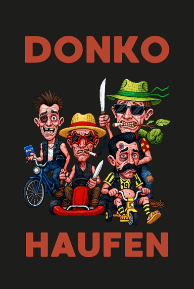
Wer bekommt den Haufen?
Das hängt davon ab, ob der Hof gerade herrenlos ist oder es bereits einen amtierenden Donko gibt:
- Die Karte liegt in der Tischmitte: (Das ist zu Beginn des Matches der Fall oder nach einer erfolgreichen Flucht.) In diesem Fall wandert die Karte an den Verlierer der gerade beendeten Schlägerei – also den Spieler, der nicht zuerst alle Handkarten loswurde.
- Es gibt bereits einen Donko: Der amtierende Donko behält die Karte nach einer normalen Schlägerei einfach bei sich. Der Haufen wird nur dann weitergereicht, wenn der bisherige Donko die Schlägerei überraschend gewinnt und selbst zum Bronko aufsteigt. In diesem Fall wandert die Karte direkt zum Gegner, dem neuen Verlierer.
Sobald es einen amtierenden Donko im Spiel gibt, muss dieser die Drecksarbeit erledigen. Er ist automatisch der feste Dealer der Runde und muss die Kämpferkarten für die nächste Schlägerei mischen und austeilen.
Auswege aus dem Donko-Dasein
Wer die Karte einmal besitzt, bleibt so lange der Donko, bis eines von drei Dingen passiert:
Der Donko gewinnt die Schlägerei und wird zum Bronko.
Der Donko wird komplett plattgemacht: Sein Bronko ist umgenockt (der LP-Stapel ist leer, 0 LP). Damit endet das Spiel sofort – der Gegner gewinnt und kassiert den Bronko-Orden.
Der Donko arbeitet seine 3 Fluchtkarten ab.
Der Fluchtplan im Detail
Sobald ein Spieler die Donko-Haufen-Karte aufgedrückt bekommt, nimmt er sich sofort alle 3 Fluchtkarten aus der Mitte.
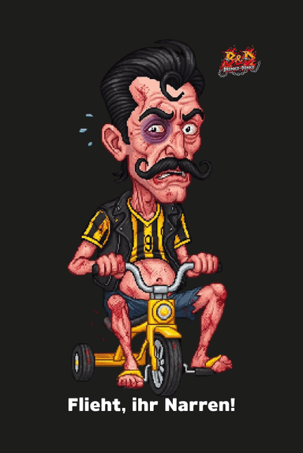
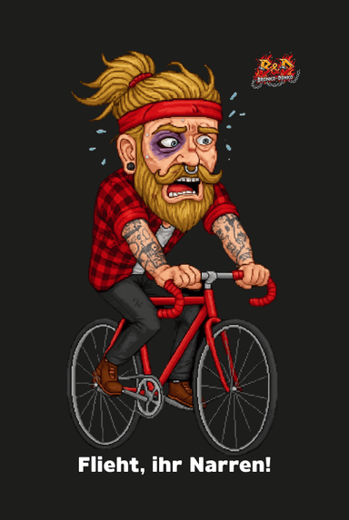
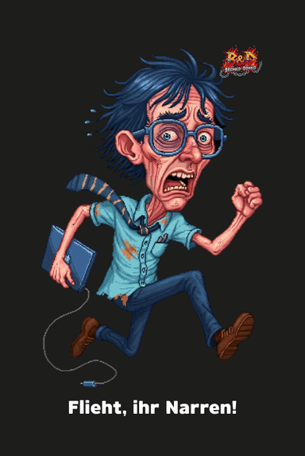
- Schafft es der Donko, während einer Schlägerei alle seine Karten mit Schaden loszuwerden, sodass er am Ende ausschließlich Karten ohne Schadenswert (Donko, Cobra, Hipster) auf der Hand hält, erleidet er 0 Schaden. Diese erfolgreiche Flucht erlaubt es ihm, sofort eine seiner Fluchtkarten zurück in die Mitte zu legen.
- Sobald der Donko seine dritte und letzte Fluchtkarte abgegeben hat, bricht er den Fluch: Die Donko-Haufen-Karte wandert sofort zurück in die Tischmitte und wird in dieser Runde an niemanden neu vergeben. Die nächste Runde startet für alle als Schlägerei ohne Donko.
Der Verrat
Zu Beginn jeder neuen Schlägerei (direkt nachdem der Donko die Karten gemischt und ausgeteilt hat) findet der Kartentausch statt: Der Donko muss seine zwei stärksten Handkarten offen an den amtierenden Bronko übergeben. Ausschlaggebend ist hierbei die reine Basis-Stärke (Zahl oben links). Besitzt der Donko mehrere Karten mit demselben höchsten Stärkewert, wählt er die Farbe selbst aus. Der Bronko reicht ihm im Gegenzug zwei beliebige Handkarten seiner Wahl offen zurück. Der Bronko hat hierbei die freie Wahl und darf dem Donko auch eine oder beide der soeben erhaltenen Karten direkt wieder zurückgeben. Spezialkarten (die Ungebetenen Gäste) sind vom Verrat grundsätzlich ausgeschlossen.
6 Fiese Tricks & Die Tischmitte
Revolution
Wird von einem Spieler ein 4er-Mob ausgespielt, zettelt er eine Revolution an.
- Die Revolution vereiteln: Der Gegner kann die Revolution im selben Schlagabtausch abwehren, indem er einen stärkeren 4er-Mob drüberlegt. Dann läuft das Spiel ganz normal weiter.
Beispiel für eine vereitelte Revolution: Spieler A will den Hof stürzen und legt einen 4er-Mob der Stärke 5 (5-5-5-5). Spieler B sitzt direkt daneben und kontert sofort mit einem stärkeren 4er-Mob der Stärke 7 (7-7-7-7). Die Revolution ist im Keim erstickt; das Spiel läuft normal weiter, ohne dass die Karten gedreht werden.
- Erfolg & Neue Stärken: Wird der 4er-Mob nicht geschlagen, bricht die Revolution aus. Alle Spieler müssen ihre Handkarten sofort um 180 Grad drehen. Ab jetzt gelten ausschließlich die auf dem Kopf stehenden Revolutionsstärken (unten rechts) als neue Basis-Stärken für alle Mobs und Straßen. Eine Revolution bleibt so lange aktiv, bis die Schlägerei endet oder eine erneute Revolution die Stärken wieder umkehrt.
Beispiel für eine erfolgreiche Revolution: Niemand kann den 4er-Mob schlagen. Alle müssen ihre Karten auf den Kopf drehen. Wer eben noch schwache Donkos (alte Stärke 1) auf der Hand hatte, hält nun plötzlich unboxbare Kampfmaschinen mit der neuen Revolutionsstärke 7 in den Händen.
Die Weste
Die Weste-Karte ist beidseitig bedruckt und liegt zu Beginn auf der Seite „mit Weste kämpfen“ in der Mitte. Nach dem Kartentausch, aber noch vor dem ersten Schlagabtausch, kann ein Spieler, der den Dünenwolf besitzt, die Weste ablegen lassen und den Hof so eskalieren:
- Der Spieler legt den Dünenwolf offen beiseite (die Karte ist für diese Schlägerei aus dem Spiel). Dies zählt nicht als Aufspiel; der reguläre Startspieler eröffnet danach den ersten Schlagabtausch.
- Die Weste-Karte wird auf die Seite „ohne Weste kämpfen“ gedreht.
- Ab jetzt wird ohne Weste gekämpft: Jeder Spieler muss umgehend die oberste Karte seines Bronko-LP-Stapels (10 LP) offen in die Tischmitte legen.
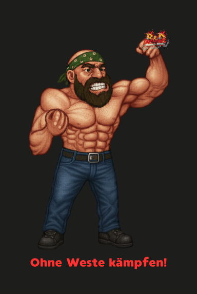
Die eiserne Regel der Tischmitte
Eine Bronko-LP-Karte gerät nur noch durch das Ablegen der Weste vor Rundenbeginn in die Tischmitte. Für diese Karte gelten folgende strikte Regeln:
- Genau eine Karte: Über die Weste legt jeder Spieler genau eine LP-Karte (10 LP) in die Mitte – mehr liegt dort nie pro Spieler.
- Erhalt durch Runden-Sieg: Ein Spieler muss exakt die Schlägerei gewinnen, in der seine LP-Karte in der Tischmitte liegt. Erreicht er den Rundensieg und wird neuer Bronko, nimmt er die Karte unbeschadet zurück auf seinen Stapel.
- Verlust bei Runden-Niederlage: Gewinnt der Spieler diese Schlägerei nicht, ist die LP-Karte am Rundenende verloren (= 10 LP). Sie wird noch vor der regulären Schadensabrechnung unwiderruflich abgeworfen. Der restliche Handkartenschaden wird erst danach auf den verbleibenden Stapel angewendet.
7 Die Ungebetenen Gäste
Es existieren zwei einzigartige Kämpferkarten im Deck, die sich nicht an die normalen Gesetze des Hofes halten. Beide sind grundsätzlich immun gegen den Kartentausch (Verrat) zu Rundenbeginn.
- Einzelgänger: Darf ausschließlich als einzelne Solo-Karte gespielt werden und kann niemals Teil eines Mobs oder einer Straße sein.
- Unantastbar: Da die Basis-Stärke 0 und die Revolutionsstärke 8 bei Standardkarten nicht existieren, kann diese Karte im normalen Spielverlauf niemals weggeboxt werden.
- Chaot: Bei einer aktiven Revolution wird der Doktor mit der Revolutionsstärke 8 zur mächtigsten Karte im Spiel — als Einziger schlägt er sogar einen einzeln (Solo) ausgespielten Donko, obwohl dieser die Faust trägt.
- Risiko: Verbleibt die Karte am Rundenende auf der Hand, erleidet der Spieler 20 Schadenspunkte.
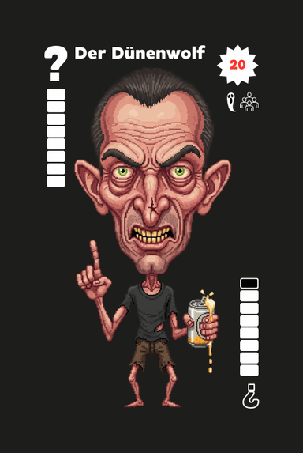
- Herdentier: Darf niemals als einzelne Solo-Karte ausgespielt werden. Er muss immer Teil eines Mobs oder einer Straße sein.
- Opfer: Kann vor Rundenbeginn geopfert werden, um die Weste ablegen zu lassen (jeder Spieler legt dann eine Bronko-LP-Karte in die Mitte).
- Gestaltwandler: Ersetzt jede beliebige Farbe und Stärke (1 bis 8), um eine Kombination zu vervollständigen. Er kann nicht die Gestalt von Dr. nar Kose annehmen.
- Klauen: Liegt der Dünenwolf in einer offenen Formation auf dem Tisch und ein beliebiger Spieler hält exakt die reale Karte auf der Hand, die der Wolf gerade ersetzt, darf dieser Spieler den Wolf austauschen. Diese Aktion darf auch außerhalb der regulären Zugreihenfolge durchgeführt werden. Der Spieler ruft „Wolfsblut!“, fügt die echte Karte der Formation hinzu und nimmt den Dünenwolf auf die Hand. Der geklaute Wolf ist für den restlichen Schlagabtausch gesperrt und darf erst im nächsten Schlagabtausch wieder eingesetzt werden.
- Falle: Hat ein Spieler das Kommando und hält nur noch den Dünenwolf als letzte Karte, kann er diesen nicht legal ausspielen (da er niemals solo spielbar ist). Der Spieler muss passen und verliert die Schlägerei.
8 Die Hackordnung am Hof
Vom gefürchteten Bronko ganz oben bis zum Donko ganz unten — und den zwei ungebetenen Gästen, die sich an keine Hofregeln halten.